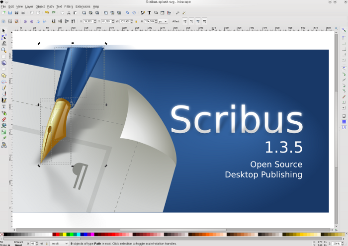

Inkscape has rapidly become one of the most important Open Source vector drawing or “illustration” tools for creative people. The Inkscape Team has made a lot of efforts to faithfully adhere to the W3C SVG specs. The most recent versions have made a lot of progress and provide a wide range of improvements, including color management, one of the best tracing tools and many features to make the life of designers easier. Like Scribus, Inkscape can easily be extended via Python scripts.
|  |
Inkscape has a very friendly user interface, with extensive tool tips and a couple of really well done short tutorials on vector drawings. Almost every function can be handled by keyboard shortcuts (the list of shortcuts is almost 10 pages!). Like Scribus, the Inkscape Team is quick with bug fixes and is very open-minded about feature requests and enhancements.
The best part of Inkscape, though, is its fidelity to the SVG specifications. No, it is not perfect, no application is, however, Inkscape SVG seems to work with other SVG applications better than most, even some expensive commercial ones.
For the most part, Inkscape SVG artwork will import into Scribus easily. There are some SVG features which are not yet supported by Scribus (like patterns or drop shadows), however 99% of the time, “It Just Works™”. If a file does not seem to import correctly into Scribus, try saving as "Plain SVG" from within Inkscape.
See the section on importing SVG for more information.